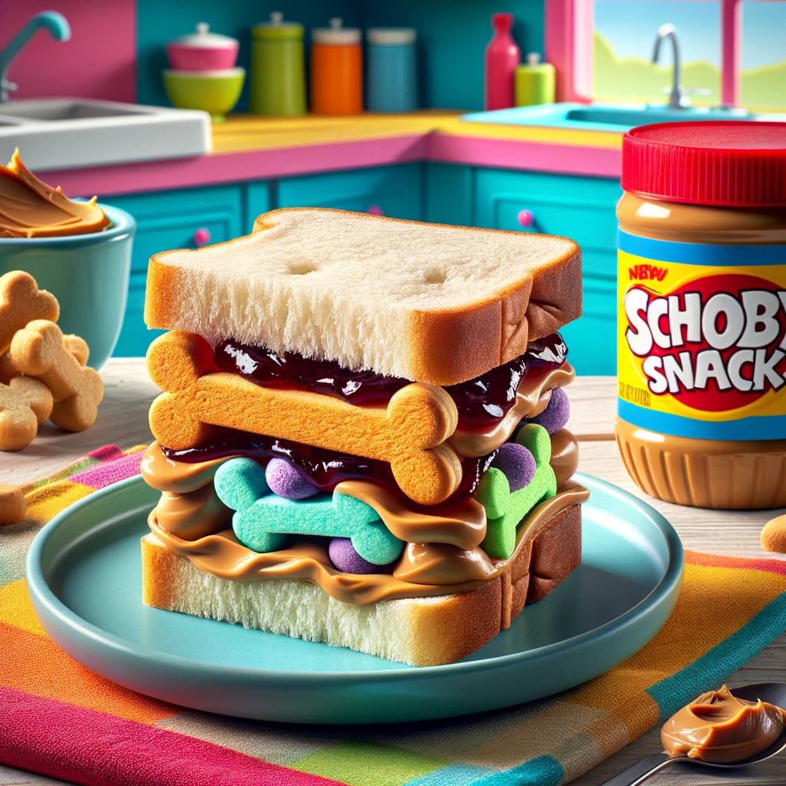

Back to home
Schoby Snack Sandwich Recipe

Description
Unleash your inner detective with the
Schooby Snackk Sandwich. A playful
combination of peanut butter, grape jelly,
and bone-shaped cookies sandwiched between
slices of bread, this snack is perfect for
solving mysteries or just enjoying a fun,
tasty treat. It's as delightful and
satisfying as catching the bad guy in a
classic cartoon caper.
Ingredients
Serves 1
- Sliced bread
- Peanut butter
- Grape jelly
- Schoby snacks (or dog bone-shaped cookies for the non-canine)
Steps
- Spread a generous layer of peanut butter on one slice of bread.
- Add a layer of grape jelly on another slice.
- Place dog bone-shaped cookies in a pattern on the peanut butter.
- Combine the two slices, cut diagonally, and solve mysteries.